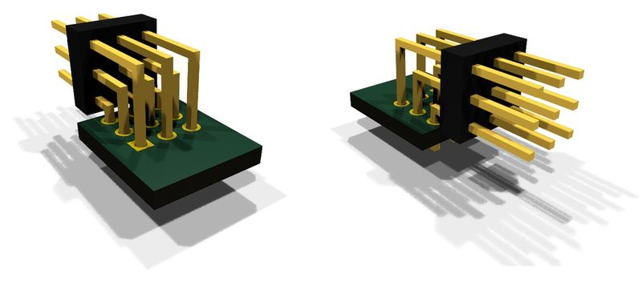
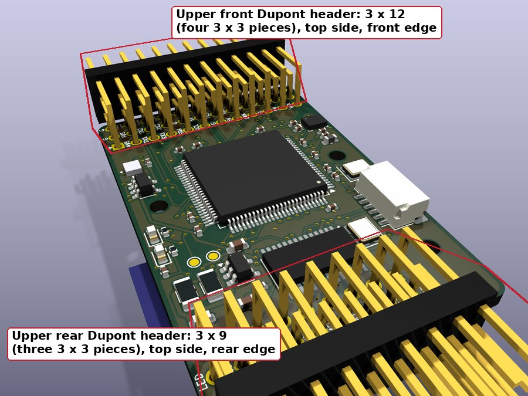
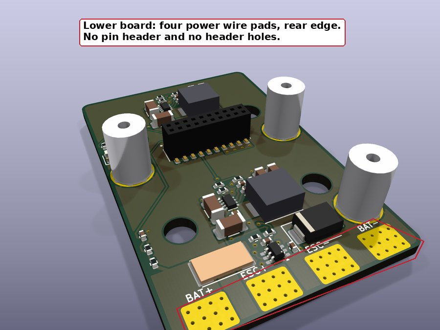

StackF765: hand soldering
Revision C. JLCPCB fits everything except the two Dupont headers on the upper board. You solder those two headers and the four power wires on the lower board. Nothing else: the lower board has no pin header, and the board-to-board connector comes fitted.
What to buy (5 sets)
| Part | Qty for 5 | Part number | Price (approx.) |
|---|---|---|---|
| 3 × 3 right-angle header, 2.54 mm (7 per board: 4 front, 3 rear) | 35 (buy 45) | HCTL PZ254-3-03-W-2.5-G0, LCSC C7429379. For the front header only, one Samtec TSW-112-08-G-T-RA can replace four pieces | About $0.23 each ($7 for 30). Samtec: $3.47 each |
| M2 × 4 mm pan-head screw | 15 | Generic | $2.40 per 100 |
| JST-SH 6-pin cable, 100 mm, wired 1:1 | 5 (buy 7) | JST A06SR06SR30K102A | $1.60 each |
| Silicone grommet, “M4 to M3”, and brass “M3 to M2” insert | 20 + 20 | Generic, Matek style | $1.90 per 5; $2 per 10 |
| M2 screws and nuts for the frame | 20 + 20 | Generic, length to suit the frame | $6 |
| Silicone power wire, 12 AWG for 50 A | 1 m red, 1 m black | Generic | $10 |
| XT60 battery connector | 5 | SparkFun 10474 or generic | $2.50 each |
Prices as read on 2026-11-20; not re-checked. Screw, grommet and insert prices are from search results only. Grommet fit in the 4 mm holes is not stated by any seller: measure one before buying 30.
Tools
- Soldering iron: a small chisel tip for the headers, a large tip for the power pads.
- Solder and no-clean flux. Do not wash the upper board or use an ultrasonic cleaner.
- Multimeter with continuity beeper.
- Tape or putty to hold the headers, flush cutters (needed for the rear header tails), wire strippers, small screwdriver.
1. Upper board: the two Dupont headers


Upper front Dupont header (3 × 12, four pieces, front edge), then upper rear Dupont header (3 × 9, three pieces, rear edge). Same steps for both:
- Put the pieces in from the top side, side by side with no gaps. Short legs go through the holes; long pins point off the board.
- The plastic body hangs just beyond the board edge. Tape it down flat, its lower face level with the top of the board.
- Turn the board over. Solder one leg at each end.
- Check the row is flat and square. Reheat a leg to adjust.
- Solder the remaining legs (36 in all at the front, 27 at the rear). Look for bridges between neighbours.
- Rear header only: cut the tails flush. They hang above the power-wire joints on the lower board. Leave the front header’s tails as they are.
Upper rear Dupont header, looking into the pins from behind. One column takes one 3-pin servo plug.
| Pin | 1 | 2 | 3 | 4 | 5 | 6 | 7 | 8 | 9 |
|---|---|---|---|---|---|---|---|---|---|
| Top (signal) | PI5V | PI5V | M1 | M2 | M3 | M4 | M5 | M6 | LED |
| Middle (5 V) | PI5V | PI5V | 5V | 5V | 5V | 5V | 5V | 5V | 5V |
| Bottom (ground) | G | G | G | G | G | G | G | G | G |
M1–M6: motor or servo outputs. LED: LED strip data. PI5V: separate 5 V, 3 A supply for a companion computer. The seven 5V pins: under 2 A in total.
2. Lower board: power wires

- Tin the four pads and the wire ends.
- Solder with the large tip. Order:
BAT+ESC+ESC−BAT−. - Keep the wires flat and pointing rearward, and every joint under 5 mm tall: the upper rear Dupont header sits directly above these pads.
3. Stack the boards
- Peel the clear film off the black socket on the lower board.
- Press the upper board down onto the three standoffs.
- Fasten with three M2 × 4 mm screws. No longer.
- microSD card: the socket is under the upper board. Slide the card in from the left-hand edge, between the boards, contacts facing up.
4. Meter check before first power
Stack assembled, no battery, no USB. Use the continuity beeper.
| Between | Must read |
|---|---|
PI5V and G | Not shorted |
Upper rear Dupont header: 5V pins and M1–M6, LED | Not connected |
BAT+ and BAT− | Not shorted |
Battery plug + and BAT+ pad | Connected (polarity right) |
More detail
- Assembly: grommets, service cable, mounting.
- Pinout: every pin of both headers.
- Bring-up: checks for each board and first power.
- Board view: turn the boards around in 3D.
Pictures are renders of the design. No hardware built yet.